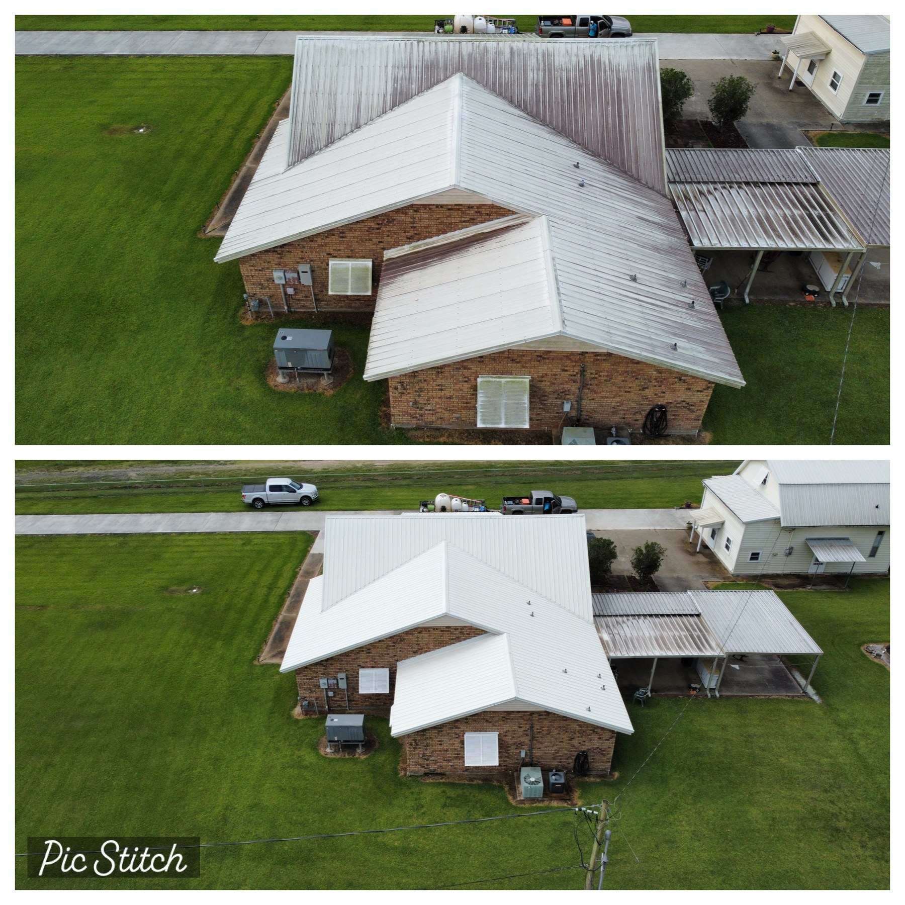
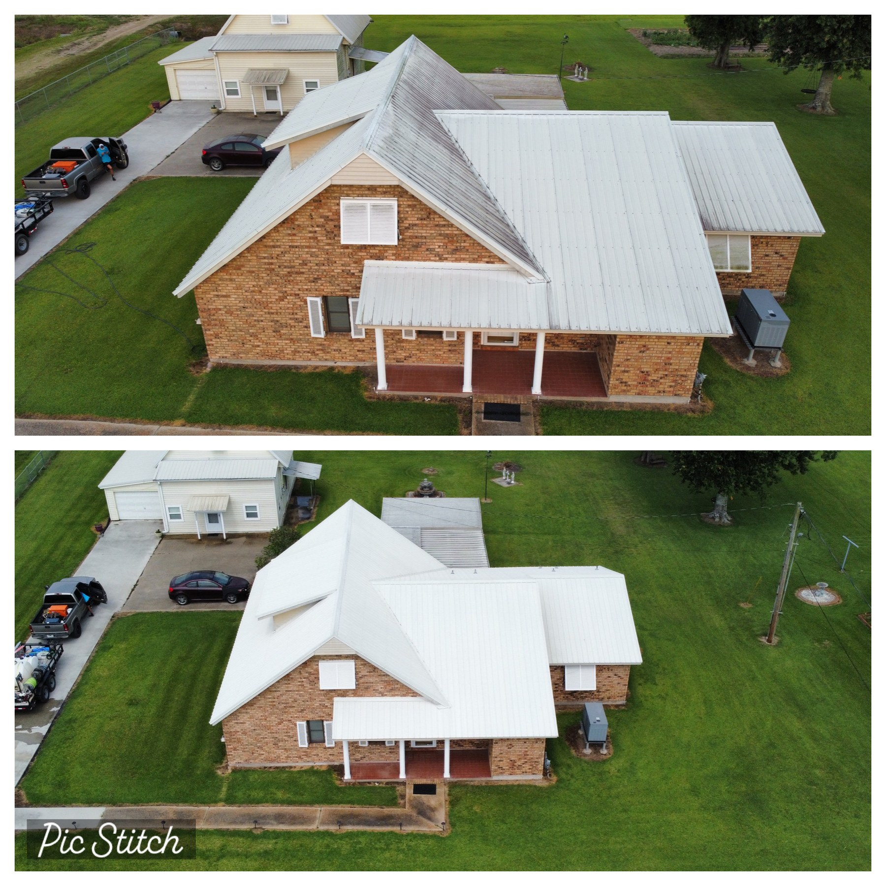
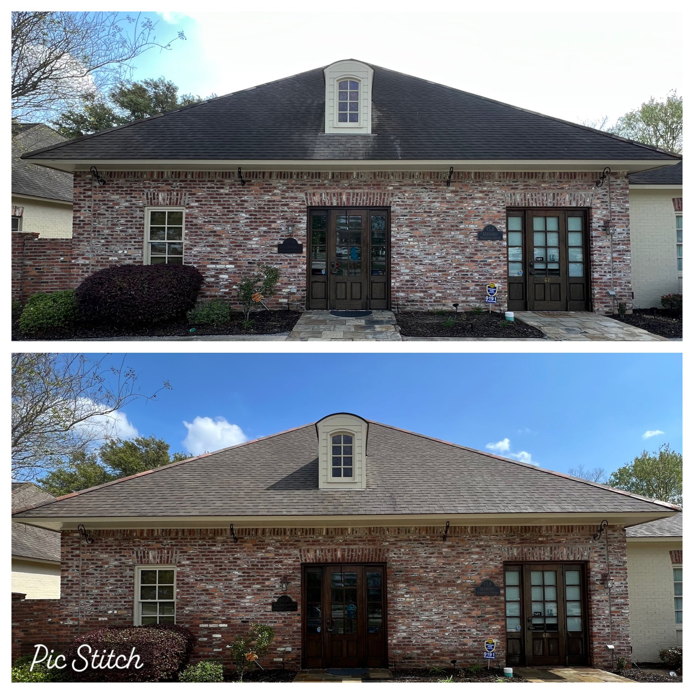

Real jobs. Real surfaces.
See what the wash did.
This gallery is built from actual Ascension Wash N' Geaux jobs—roof staining, porches, siding, concrete, fences, and the details that make a property look cared for again.

No stock project photosEvery gallery image comes from real local work.
Project gallery
Filter by the kind of surface.
Use the filters to narrow the gallery, then open any image for a larger view. The captions identify the kind of work shown.








One surface, two very different looks
Results should be obvious.
A good exterior cleaning does not need a complicated explanation. The finished surface should make the difference easy to see.
Get a quote for your propertyHave a surface that looks like one of these?
Send a photo or describe the buildup. We can point you toward the right cleaning method.